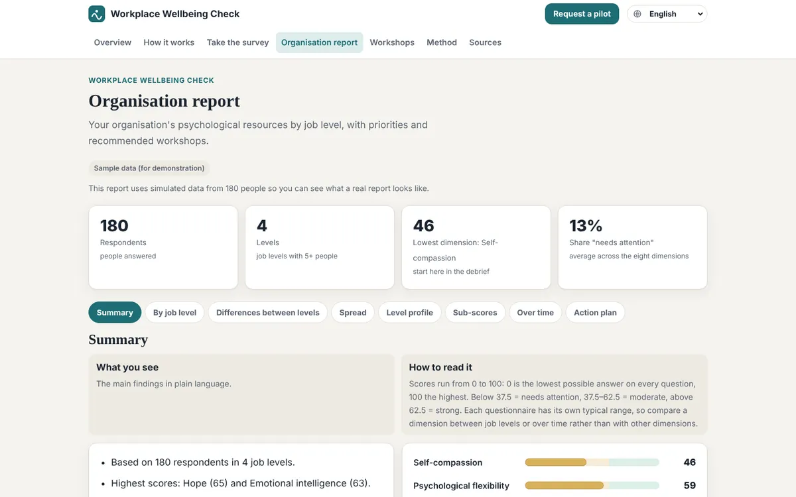

Teamweather
Live as: Workplace Wellbeing Check
A weather report for a team's inner climate. Employees answer anonymously; HR gets a forecast by job level and a plan of workshops.
- RoleFounder: problem framing, service design, scoring method
- BuiltSurvey in 9 languages, report by job level, workshop plan, absence-cost calculator
- StatusShown to psychologists and HR managers; looking for first pilot organisations